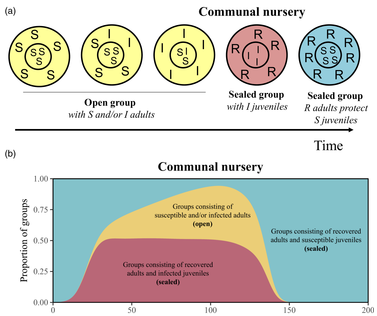

-
Alexiou et al.2024
Multi-species occupancy modeling of ground-dwelling mammals in central Laos: a case study for monitoring in tropical forests. WILDL BIOL, e01261.
-

Axtner et al.2019
An efficient and robust laboratory workflow and tetrapod database for larger scale environmental DNA studies. GIGASCIENCE, 8:giz029.
-

Benhaiem et al.2018
Slow recovery from a disease epidemic in the spotted hyena, a keystone social carnivore. COMMUN BIOL, 1:201.
-

Calderon et al.2022
Occupancy models reveal potential of conservation prioritization for Central American jaguars. ANIM CONSERV.
-

Caro et al.2023
Meta- and subpopulation estimation with disparate data: coconut crabs in the Western Indian Ocean. ANIM CONSERV.
-
Dalleau et al.2019
Modeling the emergence of migratory corridors and foraging hot spots of the green sea turtle. ECOL EVOL, 9:103171034.
-

Danabalan et al.2023
Comparison of mosquito and fly derived DNA as a tool for sampling vertebrate biodiversity in suburban forests in Berlin, Germany. ENVIRON DNA.
-
Drenske et al.2023
On the road to self-sustainability: reintroduced migratory European northern bald ibises Geronticus eremita still need management interventions for population viability. ORYX, 1-12.
-
![Figure 2 of Drenske et al. 2024: (A) Study area in Berlin, Germany, and locations of the camera traps (stations) in each of the project phases included in the study. (B) Comparison of the activity of cats and squirrels during all project phases. (C) Comparison of the activity of martens and squirrels during all project phases. (D) Comparison of the activity of squirrels in spring with and without lockdown. (E) Comparison of the activity of squirrels in autumn with and without lockdown. Shaded areas represent activity overlap.](img/repo/drenske_2024.jpg)
Drenske et al.2024
Human and predator presence shape diel activity of urban red squirrels. FRONT ECOL EVOL, 12:1455142.
-
![Figure 1 of Fronville et al. 2024: Scheme reflecting the workflow: (a) We simulated movement tracks of individual predator and prey individuals which either interacted with each other or not. The moving individuals may be in one of the two behavioural states: a persistent movement and a non-persistent movement that is very similar to correlated random walk. (b) We investigated the performance of the statistical methods by varying four factors relevant for field ecologists: four levels of perceptual range of the predator; five levels of proportion of tracked preys; two levels of temporal resolution; four levels of duration of tracking period. (c) The five different statistical methods that were applied to the generated movement tracks. The three on the top (Cs, Cr, DI) are the interaction indices while the two on the bottom are the SSF-based approaches.](img/repo/fronville_2024_MethodsEcolEvol.jpg)
Fronville et al.2024
Performance of five statistical methods to infer interactions among moving individuals in a predatorprey system. METHODS ECOL EVOL, 00, 116.
-
![Figure 1 of Fronville et al. 2025: Schematic representation of the four scenarios: Panels AC show correlated movements of two individuals caused by habitat quality and barriers (no social interaction). A.a moving next to each other along a linear resource gradient, A.b moving from opposite initial locations towards the resource in the centre. B moving in a realistic landscape where resources are clustered in space. C Movement in a homogeneous matrix with barriers randomly scattered in the landscape blocking the movement of individuals. In Panel D the two individuals are attracted to each other and move as a group in the landscape, irrespective of habitat quality or other features. The violet and blue arrows depict the movement path of two individuals, the direction shown by the arrow. In panel A, B and D each grid cell reflects habitat quality that ranges from zero (orange) to one (green). Panel C shows the matrix in grey and the barriers, which are avoided by the individuals, in black.](img/repo/fronville_2025_MoveEcol.png)
Fronville et al.2025
Considering landscape heterogeneity improves the inference of inter-individual interactions from movement data. MOVE ECOL, 13, 41.
-
Grabow et al.2022
Data-integration of opportunistic species observations into hierarchical modeling frameworks improves spatial predictions for urban red squirrels. FRONT ECOL EVOL, 10:881247.
-
![Figure 1 of Grabow et al. 2024: Centre panel: Main hypothesis: Parasites alter resource allocation in their hosts, leading to changes in such plastic traits as morphological traits and movement behaviour, with potential consequences for demography. a Capturing method for birds: Mist netting using a structured sampling design with equal sampling effort. b Scheme of Capture-mark-recapture (CMR) design, including multiple observations (obs.) across years t, when blood samples were collected and analysed via polymerase chain reaction for blood parasite infection. In case of non-recaptures (see example at t+2) no blood samples would be collected. c Barn swallow (BS) tagged during CMR with lightweight ATLAS tag (0.125Hz) for movement analyses. d Exemplary movement tracks (Supplementary movie S1), analyses of movement behavioural states (foraging, commuting, and resting via Hidden-Markov model; HMM), and habitat selection examples during foraging (via integrated Step-Selection function, iSSF). e Morphological traits of barn swallows (BS) and house martins (HM) measured during the CMR. f Schematic representation of multi-event model for analysing survival by accounting for uncertainty in blood parasite (BP) infection status; BP+, BP-, and D (round circles) describe the true state of each individual, namely infected with BP, non-infected, and dead, respectively. Transitions between BP+ and BP- are explained as survival () and state transition (), or death (1- ). Observations (pBP+ and pBP-) differ between infected and non-infected individuals, dead individuals are never captured. Infection status of subclinical infection can only be revealed by polymerase chain reaction, i.e. the testing probability (Test).](img/repo/grabow_2024.png)
Grabow et al.2024
Sick without signs. Subclinical infections reduce local movements, alter habitat selection, and cause demographic shifts. COMMUN BIOL, 7, 1426.
-
![Figure 1 of Grabow et al. 2025: Overview over the hypothesis and predictions related to pathogen-induced alterations in foraging behaviour and subsequent consequences on fitness proxies, such as impaired reproduction or body conditions. (A) Infections that remain hidden due to the absence of visible clinical signs require active testing for detection and classification of individuals infection status. In the case of avian blood parasites, this requires active collection of blood and analyses via PCR to obtain infection statuses. (B) By imposing costs on hosts, this infection can alter behaviour, including parental care movements. (C) Reduced movements may reduce parental foraging range sizes, and (D) restrict hosts foraging to specific habitat types, as resources are not distributed homogeneously. The map and pie chart are for illustrative purposes only, representing predicted foraging habitat utilization rather than actual distribution. For the distribution of habitat types, see figure 2C. (E) Juvenile development (ontogeny) is entirely dependent on the food provision of adults. (F) Therefore, reproductive success (measured as juvenile condition) is related to the foraging behaviour of adults. Eventually, the foraging behaviour of adults will determine fitness proxies, such as reproduction and regulation of body condition Starling illustrations created with the help of DALLE 3.](img/repo/grabow_2025_ProcRSocB.jpg)
Grabow et al.2025
Pathogen-induced alterations in fine-scale movement behaviour predict impaired reproductive success. PROC R SOC B, 292:20250238.
-
Grabow et al.2025
Subtle stressorsStrong responses. Consistent negative effects of avian blood parasites on phenotypic and demographic traits across songbirds. J ANIM ECOL, 00, 114.
-

Krschner et al.2021
Movement can mediate temporal mismatches between resource availability and biological events in hostpathogen interactions. ECOL EVOL, 11:57285741.
-

Krschner et al.2024
Resource asynchrony and landscape homogenization as drivers of virulence evolution: The case of a directly transmitted disease in a social host. ECOL EVOL, 14, e11065.
-

Louvrier et al.2022
Spatiotemporal interactions of a novel mesocarnivore community in an urban environment before and during SARS-CoV-2 lockdown. J ANIM ECOL, 91:367380.
-

Marescot et al.2020
Keeping the kids at home can limit the persistence of contagious pathogens in social animals. J ANIM ECOL, 90:25232535.
-
![Fig. 1. The Serengeti Ecosystem. The broad location of the migratory herds between August and October (yellow) and between late December and early May (green) is provided (Hopcraft et al., 2015). The road network of the Serengeti NP is shown in black. Thick lines represent the main murram roads; thin lines represent the tracks used by game-viewing vehicles and vehicles supplying lodges and campsites. (For interpretation of the references to colour in this figure legend, the reader is referred to the web version of this article.)](img/repo/naciri_2023_biolconserv.jpg)
Naciri et al.2023
Three decades of wildlife-vehicle collisions in a protected area: Main roads and long-distance commuting trips to migratory prey increase spotted hyena roadkills in the Serengeti BIOL CONSERV, 279, 109950.
-
Nguyen et al.2021
Getting the big picture: Landscape-scale occupancy patterns of two Annamite endemics among multiple protected areas. CONS SCI PRACT, 4:e620.
-

Planillo et al.2021
Arthropod abundance modulates bird community responses to urbanization. DIV DIST, 27:34-49.
-

Planillo et al.2021
Citizen science data for urban planning: Comparing different sampling schemes for modelling urban bird distribution. LAND URB PLAN, 211:104098.
-

Planillo et al.2024 a
Understanding habitat selection of range-expanding populations of large carnivores: 20 years of grey wolves (Canis lupus) recolonizing Germany. DIVDIST, 00, 116.
-

Planillo et al.2024 b
Habitat and density effects on the demography of an expanding wolf population in Central Europe. Wildlife Biology. WILDL BIOL.
-
![Figure 1 of Radchuk et al. 2016: schematic representation of the model structure. Scheduling and timing of the major processes is shown in a top row separately for each season: (A) summer; (B) week 44; (C) winter. Processes occurring during the summer season are shown on a white background, and those occurring in winter are shown on a gray background. The bottom row presents more details on the processes specified in the upper row: (D) shows how dispersal, reproduction, survival, and maturation (a submodel within ageing) of voles are implemented in the summer; (E) demonstrates how predation affects vole populations in week 44; and (F) shows details on winter survival and ageing. Ageing is the same in summer and winter seasons and is therefore shown on the white background in (E), but maturation occurs only in summer.](img/repo/radchuk_2016.png)
Radchuk et al.2016
From individuals to population cycles: the role of extrinsic and intrinsic factors in rodent populations. ECOLOGY, 97:720-732.
-
![Figure 3 of Radchuk et al. 2019: trait changes in response to temperature. For each study in the phenotypic responses to climate with selection (PRCS) dataset, the changes in morphological traits are shown in grey and the changes in phenological traits are shown in black. Each study is identified by the publication identity, the trait and the species. Studies are sorted by trait category (black: phenological; grey: morphological), and within it by species, trait name and publication identity. Overall, phenological traits in both the PRCS dataset (black) and the PRC dataset (dark blue) were negatively affected by temperature. Morphological traits were not associated with temperature in the PRCS (grey) and showed a tendency to a negative association with temperature in the PRC dataset (cyan). In the PRC dataset there was significant variation among taxa in the effect of temperature on phenological (blue) traits, and a tendency to such variation for morphological traits (cyan).](img/repo/radchuk_2019.png)
Radchuk et al.2019
Adaptive responses of animals to climate change are most likely insufficient. NAT COMMUN, 10:3109.
-
![Figure 2 of Radchuk et al. 2026: Map of the studies, colour-coded for different taxa, with the number of studies per taxon shown. A selection of studied species is shown, with each inset giving information for that species on its generation time (T, in years; also depicted by the black bar next to it), its diet (carnivore: C, herbivore: H, and omnivore: O) and whether the species is a migrant (M) or a resident (R). The inset shows the number of studies per taxon and trait category. Illustration credits for the species pictures taken from Wikipedia: Svalbard reindeerBjrn Christian Trrissen, four-striped grass mouseC.R. Selvakumar, silver gullJJ Harrison, snow petrelSamuel Blanc, northern giant petrelLiam Quinn, green turtleBrocken Inaglory, green-rumped parrotletJam.mohd, Columbian ground squirrelMartin Pot, red-winged fairy-wrenJohn Anderson, grey-headed albatrossJohn Harrison. Two species pictures were provided by the co-authors of this study: painted turtle (credit: FJ) and Atlantic yellow-nosed albatross (credit: SOp). The remaining pictures were taken from Pixabay (https://pixabay.com/photos/).](img/repo/radchuk_2026.png)
Radchuk et al.2026
Changes in phenology mediate vertebrate population responses to temperature globally. NAT COMMUN 17:479.
-

Rocha & Sollmann 2023
Habitat use patterns suggest that climate-driven vegetation changes will negatively impact mammal communities in the Amazon. ANIM CONSERV.
-
![Graphical Abstract: Range expansion is a common feature of invasive, reintroduced, and recovering populations. This process is driven by population growth and dispersal, and intrinsic species characteristics and dispersal mechanisms yield contrasting population structures in space. The spatial distribution of sex and age classes is key to understanding and forecasting range expansions, but mapping age and sex categories is methodologically challenging. Here, we develop an age-structured open population spatial capture recapture (OPSCR) model to understand how spatial sex and age structures can shape population dynamics, as well as recovery processes. We use the endangered Pyrenean brown bear population as a case study, analysing non-invasive monitoring data from 2017 to 2021. Results revealed an expansion front dominated by adult (>4 years) and subadult males (24 years), while females and juveniles (<2 years) prevailed at the core. This, together with an overall decrease in density towards the expansion front in spite of available habitat, suggest an expansion process constrained by female philopatry. Future projections suggest continued population growth even under demographic stochasticity, and potential for population spread with increased reproduction events at the periphery. Our novel OPSCR model allows for statistically rigorous mapping of the sex and age structure of a population from non-invasive monitoring data. This is an important step towards better understanding and predicting the dynamics of recovering populations worldwide. In the case of large carnivores, it could inform conservation action such as anticipating the adoption of damage prevention measures and raising awareness campaigns to improve co-existence in future expansion areas.](img/repo/sanz-perez_2025_biolconserv.jpg)
Sanz-Perez et al.2025
Mapping sex- and age-structure reveals lonely males at the front in an expanding brown bear population. BIOL CONSERV.
-

Sanz-Perez et al.2025
How to better count elusive birds? Comparing non-invasive monitoring methods to estimate population size of the threatened Pin-tailed sandgrouse (Pterocles alchata). BIODIVERS CONSERV.
-
![Figure 1 of Scherer et al. 2020: schematic representation of the agent-based model, possible approaches to simulate movement in epidemiological models and the analytical workflow. (a) Snapshot of the spatially explicit agent-based model with explicit host movement used in this study. (bd) Possible modelling approaches to simulate movement in epidemiological models. (e) Simulations were run for 624 weeks (= 12 years) with the pathogen being released in the second year (grey area) to allow the pathogen to spread for at least 10 years. (f) For all 200 simulation runs per combination of movement rule (correlated random walk, habitat-dependent movement and competition-driven movement) and landscape scenario (homogeneous and three levels of spatial heterogeneity), we recorded the first and last week of the outbreak, and classified the runs as either non-persistent (less than 10 years since pathogen release; grey) or persistent (more than 10 years; orange). (g) Based on this information, we calculated persistence probabilities using a 10-year threshold (black dotted line) as well as three shorter time periods (2.5-, 5- and 7.5-year thresholds, grey dotted lines).](img/repo/scherer_2020.png)
Scherer et al.2020
Moving infections: individual movement decisions drive disease persistence in spatially structured landscapes. OIKOS, 129:651667.
-

Schmied et al.2024
Effect of human induced surface water scarcity on herbivore distribution during the dry season in Ruaha National Park, Tanzania. WILDL BIOL, e01131
-

Scholz et al.2024
Host weight, seasonality and anthropogenic factors contribute to parasite community differences between urban and rural foxes. STOTEN 936.
-
![Figure 1 of Signer 2025: Schematic of the implemented analytical methods and simulation study of scenario 1. (A) For each of the replicated landscape settings with different spatial autocorrelation and their combinations, we (B) simulated 20 repetitions of nearly-continuous animal movement tracks influenced by these variables and subsampled the tracks to three different sampling intervals. (C) The tracks of different intervals were analyzed with three method variants (iSSA, RSA, and wRSA). Multicollinearity assessment of the combined landscape scenarios is provided in Figure S2.](img/repo/signer_2025_ecolevol.jpg)
Signer et al.2025
The 4th Dimension in Animal Movement: The Effect of Temporal Resolution and Landscape Configuration in Habitat-Selection Analyses. ECOL EVOL 15:e71434
-

Sollmann 2024
Mt or not Mt: Temporal variation in detection probability in spatial capture-recapture and occupancy models. PEERJ 4, e1.
-
Sollmann, Caro 2024
Spatio-temporal metapopulation trends: The coconut crabs of Zanzibar. ECOL EVOL, 14, e70168.
-
![Figure 1 of Tilker et al. 2024: (a) Total number of snares removed by Forest Guards (blue line) and patrol effort in ha (red line); (b) response of snare detection probability to survey effort; (c) response of snare occupancy probability to covariates; thick black line shows mean effect for all years, gray shaded area show 95% confidence intervals (b and c), and light gray lines show mean effect for individual years (c only); (d) median snare occupancy probability for survey period (20112021); (e) median change in snare occupancy probability across the survey period; (f) percentage of area occupied (PAO) values for individual years; black dot indicates median and line indicates 50% posterior mass; based on predictions from multi-season occupancy model (df); (g) response of snare occupancy to prior patrol effort for two time periods, 2016 and 2021; and (h) cost of setting and removing an individual snare in the study areas, with removal cost divided by Payment for Forest Ecosystem Services and NGO aid funds.](img/repo/tilker_2024_conservlett.jpg)
Tilker et al.2024
Addressing the Southeast Asian snaring crisis: Impact of 11 years of snare removal in a biodiversity hotspot. CONSERV LETT, e13021.
-

Voigt et al.2022
Modelling the power of acoustic monitoring to predict bat fatalities at wind turbines. CONSER SCI PRACT, 4:e12841.